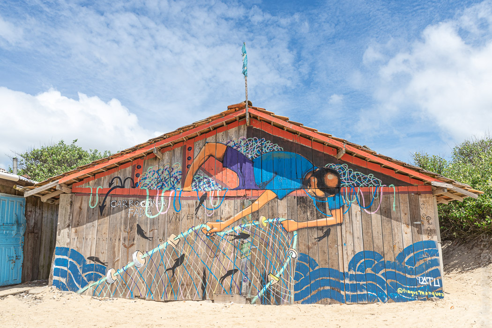
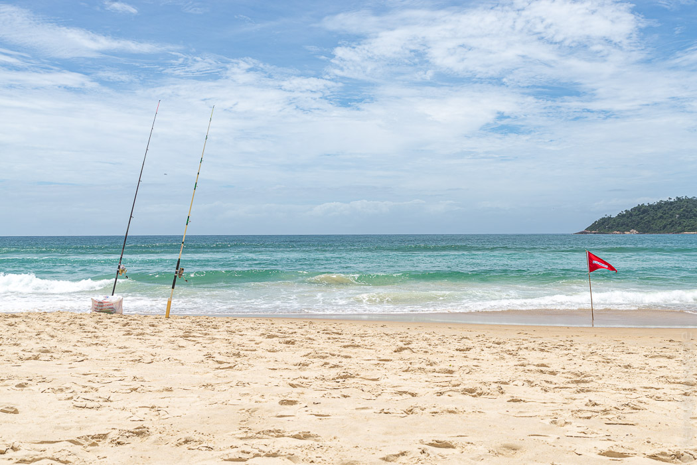
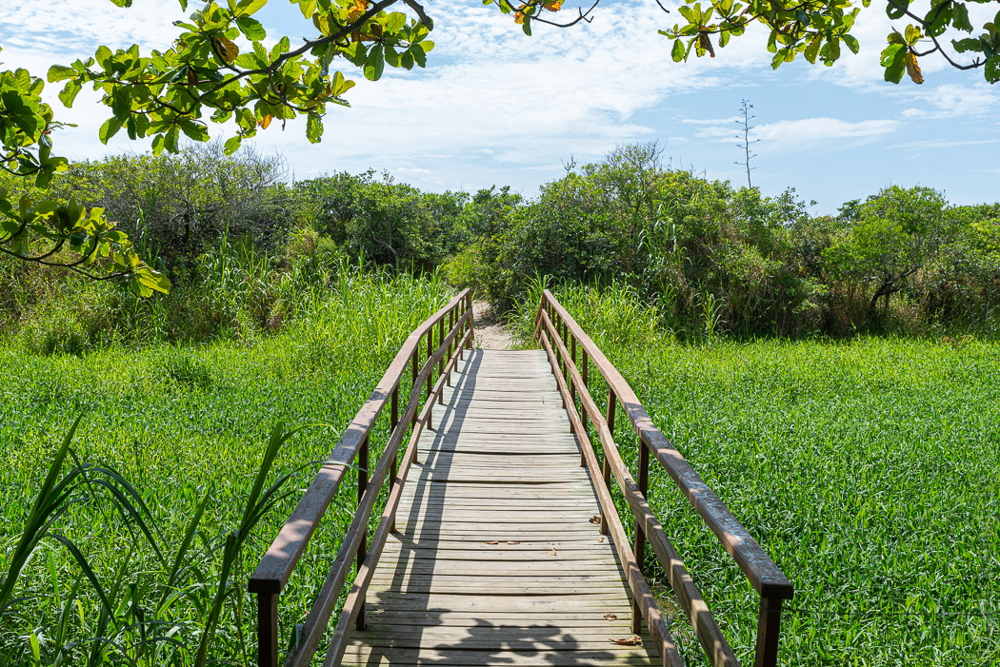

Nach so viel Action waren wir endlich urlaubsreif. Florianopolis liegt ein gutes Stück östlich von Foz do Iguaçu am Atlantik. Wir haben uns eine nette Unterkunft im kleinen Ort Campeche gesucht, weil es dort nicht so touristisch sein sollte. Tatsächlich waren auch kaum Touristen da (in fünf Tagen haben wir zwei andere gesehen). Was aber nicht hieß, dass es dort leer gewesen wäre.
Der Strand von Campeche ist das Naherholungsgebiet der Floripaner, die hier morgens joggen, mittags Joga machen, nachmittags angeln und nach der Arbeit zum Wellenreiten rauskommen. Die Profis rücken direkt mit Sonnenschirm und Kühlbox an. Am Sonntag herrschte Baggersee-Atmosphäre. Obwohl der Strand 10km lang ist, knubbelte sich alles an einer Stelle (wo es Duschen und Açaí-Softeis gab - verständlich). Schon ein paar Meter weiter war es recht friedlich.
Am ersten Tag hatten wir tolles Wetter, was in dieser Gegend gefährlich sein kann. Wir hatten beide (!) Sonnenbrand - und am nächsten Tag dann auch einen Sonnenschirm. Der hatte im stetigen Wind zwar keinen leichten Job, hat uns fortan aber gerettet.
Der Ort ist eher für Autofahrer ausgelegt, weil es kein Zentrum gibt, sondern alles auseinander gezogen an ein paar langen Straßen liegt. Es fahren aber regelmäßig Busse in alle Richtungen, die auch alle paar Meter halten. Wenn man nicht nur Burger essen will, lohnt sich Busfahren.
Ansonsten sind wir jeden Morgen durch die Dünen zum Strand gelaufen und haben einige herrlich entspannte Tage verbracht.
